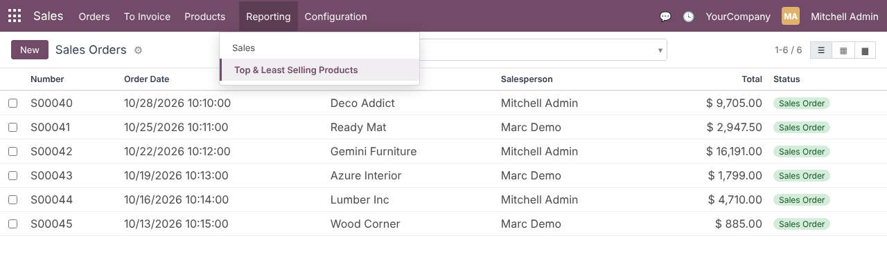
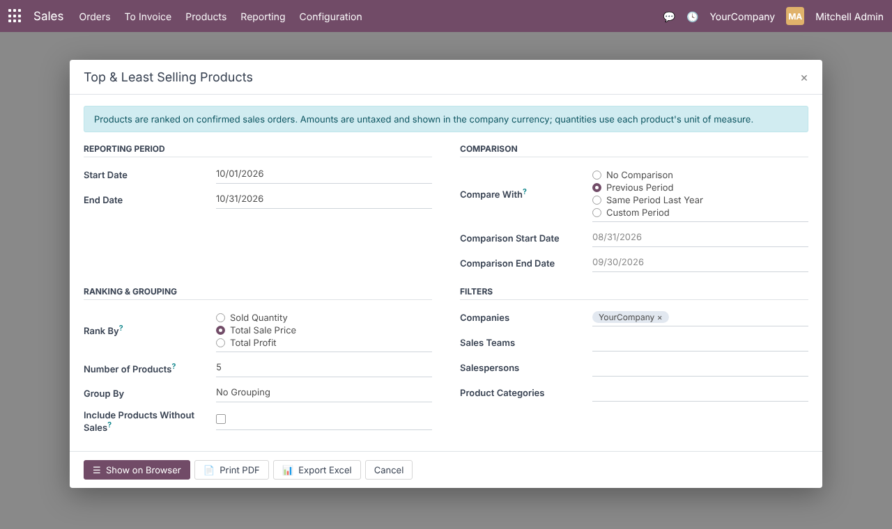
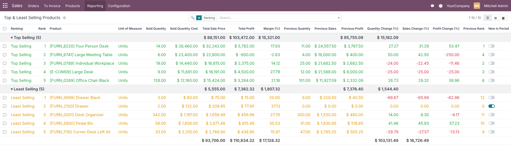
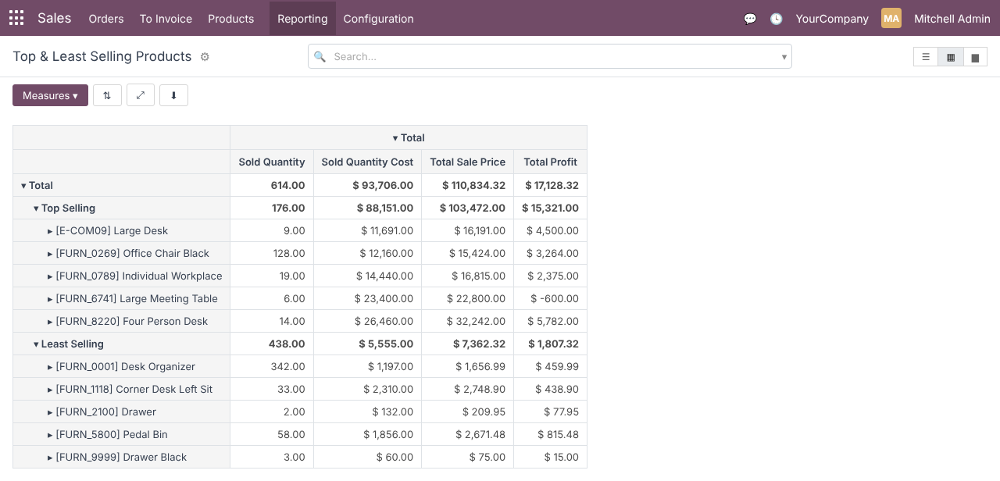
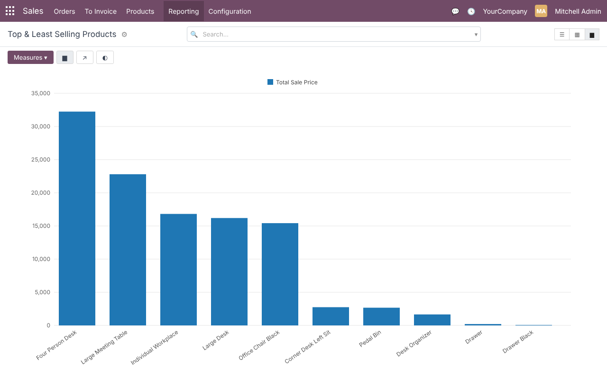
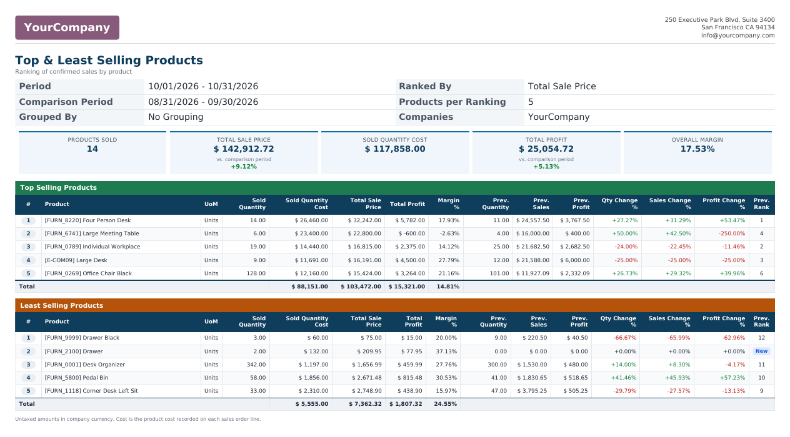
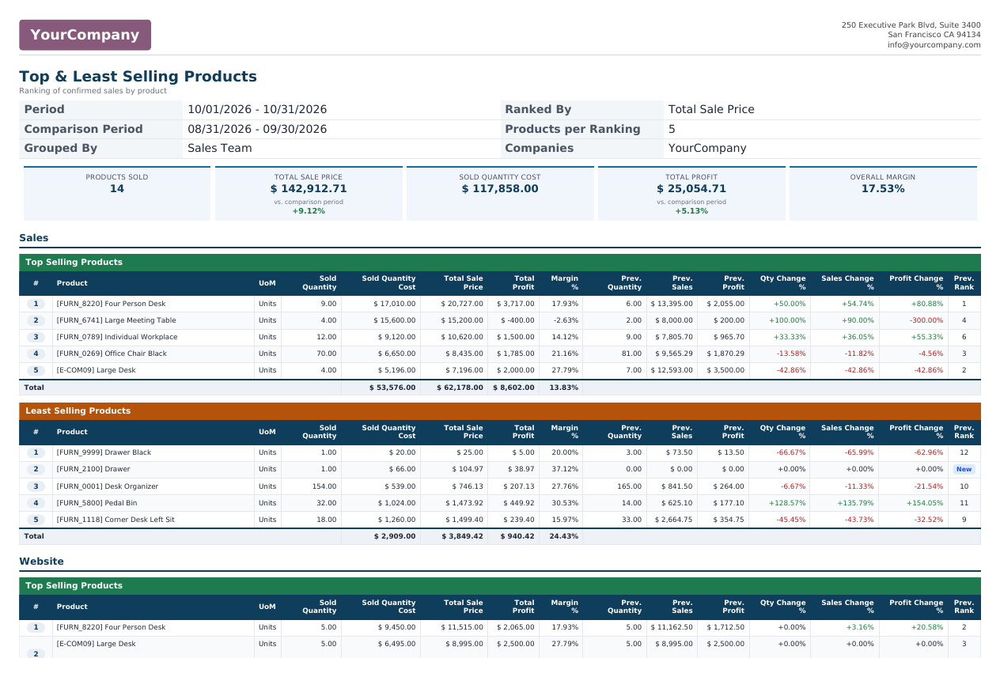
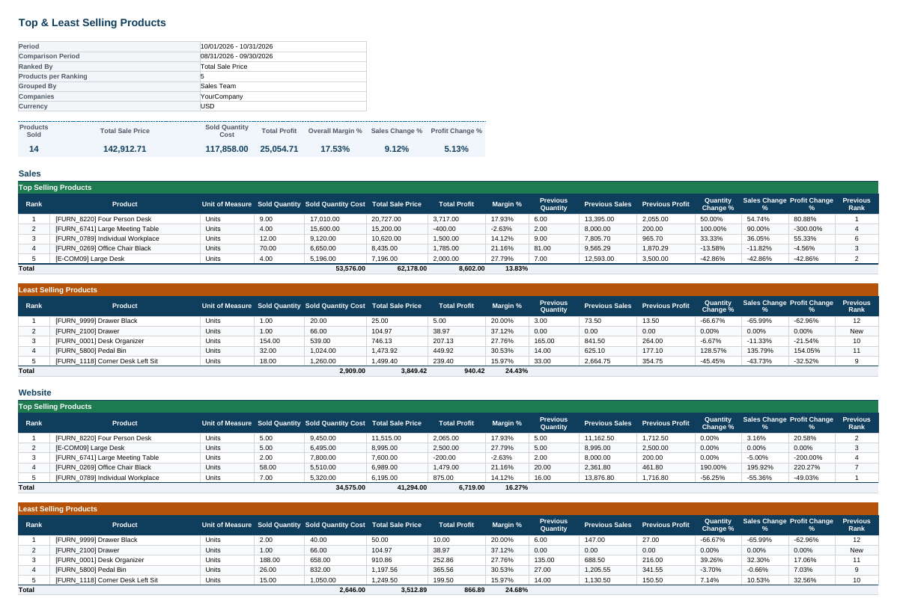
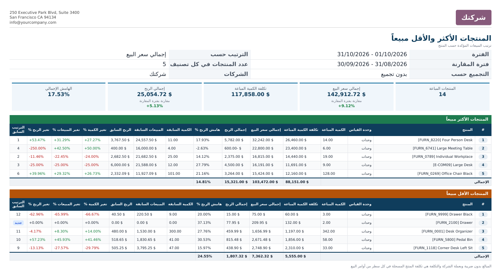
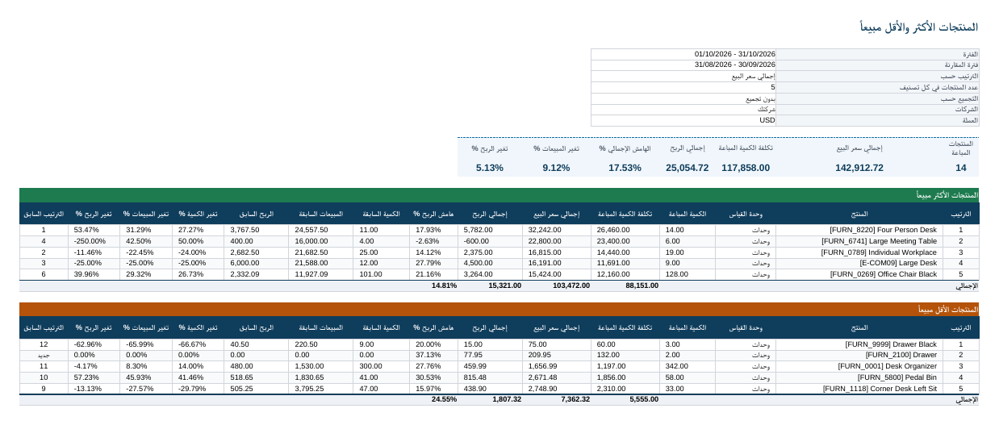

See which products carry your sales and which ones barely move, ranked by quantity, revenue or profit. Compare any two periods, group by sales team or salesperson, and share the result as a list, a PDF or an Excel file.
The standard Sales Analysis is a flexible pivot, but turning it into a clear “best and worst sellers” report takes manual work every time.
Four steps, all from one dialog.
Screenshots use demo data: 14 office furniture products sold by the Sales and Website teams in October 2026, compared with the previous period (31 Aug – 30 Sep 2026), ranked by Total Sale Price with 5 products per set.
The report lives at Sales › Reporting › Top & Least Selling Products. The standard Sales analysis and every other Odoo report stay exactly as they are.

Set Start Date and End Date, then Compare With No Comparison, Previous Period, Same Period Last Year or Custom Period. The comparison dates fill in automatically and can be typed freely in custom mode. Choose Rank By, the Number of Products and Group By (No Grouping, Sales Team, Salesperson). Optional filters: Companies, Sales Teams, Salespersons and Product Categories (sub-categories included).

The list opens grouped by Ranking: top sellers in green, least sellers in amber, with totals per set. When comparing, it adds Previous Quantity, Previous Sales, Previous Profit, the three Change (%) columns (green up, red down), Previous Rank and New in Period. Comparison columns are optional, so each user can hide what they don’t need. Search filters: Top Selling, Least Selling, New in Period; group by Ranking, Sales Team, Salesperson or Product Category.

Switch views to slice the ranked lines by section, product, product category, team or salesperson. The pivot starts with Sold Quantity, Sold Quantity Cost, Total Sale Price and Total Profit; the graph shows Total Sale Price per product.


Print PDF produces an A4 landscape report in your company layout: the criteria used, five KPI cards (Products Sold, Total Sale Price, Sold Quantity Cost, Total Profit, Overall Margin, with change versus the comparison period), then the green Top Selling Products and amber Least Selling Products tables with totals. Table headers repeat on each page, rows never split, and the paper format leaves room so the company header never overlaps the content.


Export Excel downloads an .xlsx with the same structure as the PDF: criteria block, KPI row, colour-coded sections per group and a total row per set. Values are real numbers with number formats, so they can be filtered, charted and summed straight away.

Every label, button, message and report heading is translated to Arabic (ar_001). For Arabic users the PDF and the Excel sheet switch to right-to-left, while signed percentages and Latin product references such as [FURN_8220] keep their correct reading order.


Confirmed sales orders only (Sales Order, locked or not), read through the standard Sales Analysis and summed in the database.
| Column | Meaning |
|---|---|
| Sold Quantity | Ordered quantity converted to the product’s own unit of measure (2 Dozens → 24 Units) |
| Total Sale Price | Untaxed subtotal, converted to the company currency |
| Sold Quantity Cost | Cost recorded on each sales order line (Sales Margin) × quantity |
| Total Profit | Total Sale Price − Sold Quantity Cost |
| Margin % | Total Profit ÷ Total Sale Price × 100 (0 when nothing was sold) |
| Change % | (current − previous) ÷ |previous| × 100 |
| Previous Rank | Position of the product among all products of the same group in the comparison period |
Each of these is covered by the automated tests.
The report reads Odoo’s Sales Analysis, so the standard Sales access rules decide what each user sees.
| Who | Sees |
|---|---|
| Sales: Administrator | All confirmed orders of the selected companies |
| Sales: User: All Documents | All confirmed orders of the selected companies |
| Sales: User: Own Documents Only | Only their own orders and orders with no salesperson (standard Sales Analysis rule) |
| Multi-company | Only companies the user is allowed in; amounts converted to the current company currency |
| Generated results | Private to the user who ran the report and cleaned up automatically by Odoo |
| Odoo version | 17.0, Community and Enterprise |
| Depends on | sale_management, sale_margin |
| Python dependency | xlsxwriter (already part of Odoo’s requirements) |
| Menus | Sales › Reporting › Top & Least Selling Products |
| Settings | None needed |
| Models | top.least.selling.wizard, top.least.selling.report.line (both transient) |
| Report | QWeb PDF with its own A4 landscape paper format; no change to existing reports |
| Translations | Arabic (ar_001), plus a .pot template for other languages |
| Automated tests | 32: ranking and margin math, period and leap-year calculations, period comparison, grouping, filters, units of measure, locked orders, validation, list / PDF / Excel outputs in English and Arabic |
| License | LGPL-3 |
Questions, a demo, or an adaptation to your own process? Get in touch.
✉ ibrahim.yahiah@gmail.com LinkedIn: Ibrahim YahiaAuthor: Ibrahim Yahia · License: LGPL-3